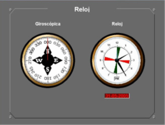

Reloj
El módulo de Reloj puede ser real (hardware) o simulado (software).
Versión Hardware:
La versión hardware contiene los siguientes elementos:
- Indicador digital de Orientación del Visual: indicador digital de tres cifras en el que se muestra en grados la marcación de la línea de proa del visual en grados.
- Indicador digital de Reloj: indicador digital de 6 cifras en el que se muestra la hora de simulación con el formato HH:MM:SS. Cuando el Ejercicio en simulación está en Pausa, este indicador se muestra intermitente.
Versión Software:

La versión software contiene los siguientes elementos:
- Giróscopo: indicador del rumbo aparente del buque.
- Reloj: indicador de la hora del ejercicio que está en ejecución.
- Fecha: indicador digital de la fecha del ejercicio que está en ejecución.